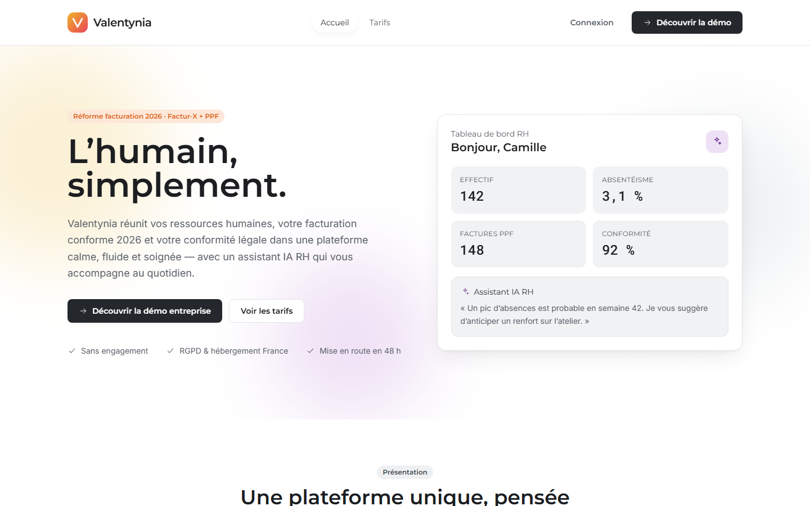
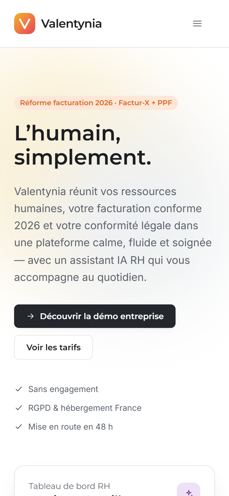
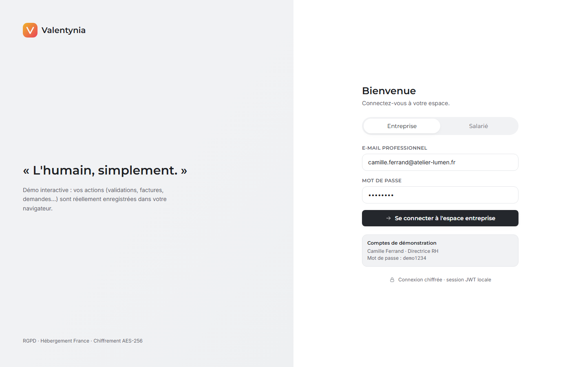
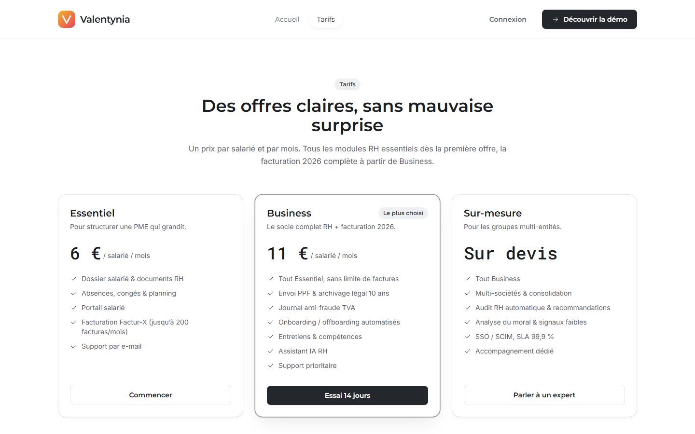
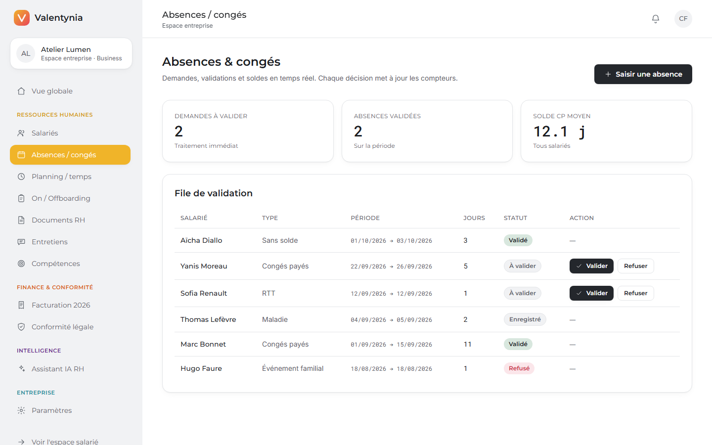
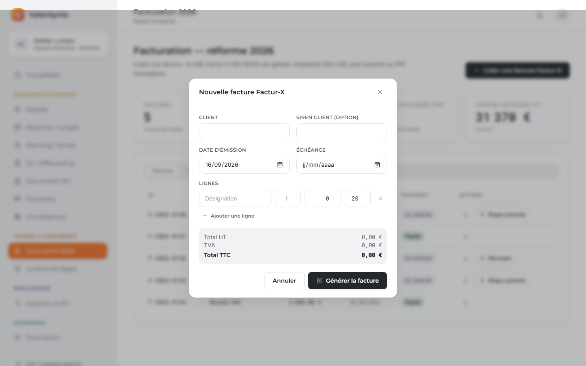
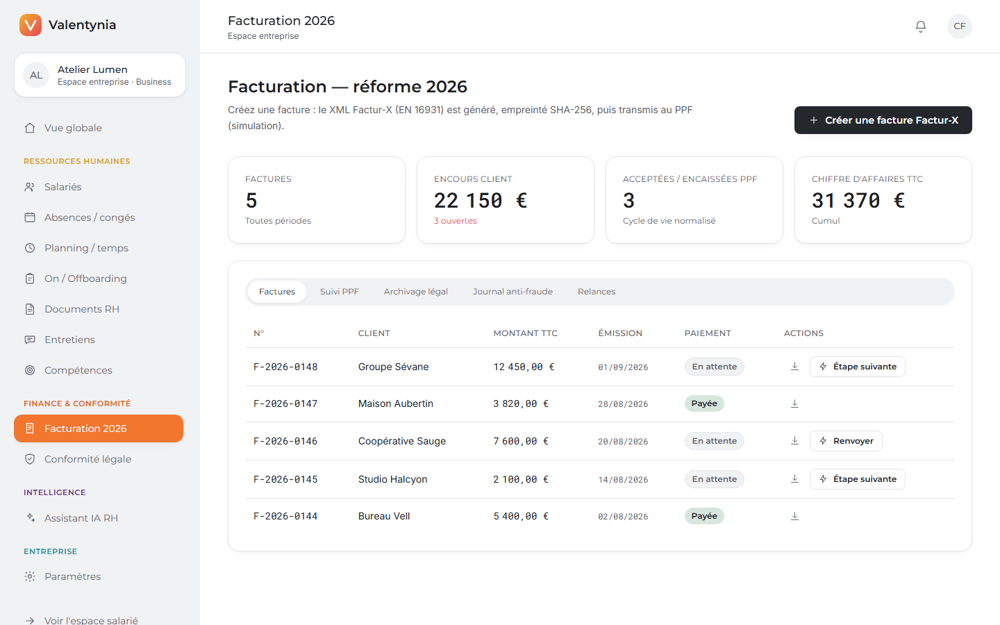

Titre professionnel Développeur Web et Web Mobile (DWWM)
Valentynia — L'humain, simplement.
Plateforme SaaS de gestion des ressources humaines et de facturation électronique conforme à la réforme 2026 (Factur-X + Portail Public de Facturation), avec suivi de la conformité légale et assistant IA RH.
Ce dossier présente Valentynia, le projet développé dans le cadre du titre professionnel Développeur Web et Web Mobile. Il s'agit d'un projet complet, conçu et réalisé individuellement, de la définition du besoin jusqu'à la mise en ligne.
Valentynia se positionne comme l'application d'un éditeur de logiciel SaaS (Software as a Service) fictif destiné aux petites et moyennes entreprises. Pour illustrer le fonctionnement, une entreprise cliente de démonstration a été modélisée : « Atelier Lumen », un bureau d'études techniques de 142 salariés relevant de la convention collective Syntec.
Valentynia réunit dans une plateforme unique quatre domaines habituellement éclatés entre tableurs et prestataires distincts :
L'application distingue deux espaces : un espace entreprise pour les fonctions RH et de direction, et un espace salarié autonome. L'accès est régi par un système de rôles (administrateur, gestionnaire RH, manager, salarié).

| CCP | Activité type | Où elle est traitée dans ce dossier |
|---|---|---|
| CCP 1 Front-end + sécurité |
Maquetter des interfaces utilisateur web ou web mobile | § 6 et § 7.1 |
| Réaliser des interfaces utilisateur statiques web ou web mobile | § 7.2 | |
| Développer la partie dynamique des interfaces utilisateur | § 7.3 | |
| CCP 2 Back-end + sécurité |
Mettre en place une base de données relationnelle | § 5 et § 8.1 |
| Développer des composants d'accès aux données SQL et NoSQL | § 8.2 | |
| Développer des composants métier côté serveur | § 8.3 | |
| Documenter le déploiement d'une application dynamique web | § 10 |
Les recommandations de sécurité exigées par chaque CCP sont regroupées et détaillées en § 7.4 (front) et § 8.4 (back), avec une correspondance explicite au référentiel OWASP Top 10.
Deux constats sont à l'origine du projet :
Valentynia répond aux deux à la fois : une seule plateforme, un seul point d'entrée, une cohérence entre la donnée RH (les salariés, la masse salariale) et la donnée financière (les factures, la TVA).
| Rôle (code) | Profil | Droits |
|---|---|---|
ADMIN | Dirigeant, DRH | Accès complet à l'espace entreprise, paramètres, gestion des offres et des utilisateurs. |
HR | Gestionnaire RH | Gestion des salariés, absences, documents, facturation ; pas d'accès aux paramètres de l'entreprise. |
MANAGER | Responsable d'équipe | Validation des demandes d'absence et des tâches d'onboarding de son périmètre. |
EMPLOYEE | Salarié | Espace personnel : bulletins, documents, demandes, planning, profil, assistant. Accès limité à ses propres données. |
| Exigence | Réponse apportée |
|---|---|
| Sécurité des accès | Authentification JWT, mots de passe hachés bcrypt, rôles, limitation de débit anti-force brute. |
| Protection des données sensibles | Chiffrement AES-256-GCM au repos (IBAN, n° de sécurité sociale), affichage masqué. |
| Conformité RGPD | Cloisonnement par entreprise, minimisation des données, registre suivi dans l'application. |
| Inaltérabilité fiscale | Journal TVA chaîné par empreinte cryptographique. |
| Fiabilité | TypeScript strict des deux côtés, validation Zod, 23 tests automatisés. |
| Réactivité de l'interface | Application monopage, cache serveur TanStack Query, retours de chargement et d'erreur systématiques. |
| Responsive | Conception desktop-first (usage RH sur poste) avec adaptation mobile du site vitrine et des écrans salarié. |
| Coût | Hébergement sur offres gratuites (Netlify, Render, Neon). |
Le diagramme ci-dessous synthétise les principaux cas d'usage par acteur.
flowchart LR RH([RH / Admin]):::a MG([Manager]):::a SA([Salarié]):::a RH --- U1[Dossiers salariés] & U2[Facture Factur-X] & U3[Suivi PPF] & U4[Onboarding] & U5[Campagnes d'entretiens] & U6[Alertes conformité] MG --- U7[Valider une absence] & U8[Tâches d'un parcours] SA --- U9[Déposer une demande] & U10[Bulletins / documents] & U11[Mettre à jour son profil] & U12[Assistant IA] classDef a fill:#f7e9ed,stroke:#c25a76,color:#232022;
| # | En tant que… | je veux… | afin de… |
|---|---|---|---|
| US-01 | gestionnaire RH | créer un dossier salarié avec son contrat et ses coordonnées bancaires | centraliser l'information et sécuriser les données sensibles |
| US-02 | salarié | déposer une demande de congés en indiquant les dates | obtenir une validation sans passer par l'e-mail |
| US-03 | manager | valider ou refuser une demande en un clic | que le solde de congés du salarié soit mis à jour automatiquement |
| US-04 | gestionnaire RH | générer une facture au format Factur-X | être conforme à la réforme 2026 et disposer du XML normalisé |
| US-05 | gestionnaire RH | transmettre la facture au PPF et suivre son statut | savoir si elle est reçue, acceptée, rejetée ou encaissée |
| US-06 | administrateur | consulter un journal TVA inaltérable | répondre à un contrôle de l'administration fiscale |
| US-07 | gestionnaire RH | lancer un parcours d'intégration pour un nouvel arrivant | ne rien oublier grâce à une checklist type |
| US-08 | salarié | consulter mes bulletins et télécharger mes documents | ne plus solliciter le service RH pour ces demandes courantes |
/ Accueil (vitrine) /tarifs Offres /connexion Authentification /app Espace entreprise (rôle != EMPLOYEE) / Tableau de bord /salaries Dossiers salariés /absences Absences & congés /planning Planning & temps de travail /onboarding Onboarding / offboarding /documents Documents RH /entretiens Entretiens /competences Compétences /facturation Facturation 2026 /conformite Conformité légale /ia Assistant IA RH /parametres Paramètres entreprise /espace Espace salarié / Accueil personnel /documents /bulletins /demandes /planning /profil /assistant /404 Page non trouvée
Les routes /app/* et /espace/* sont protégées par un composant de
garde (RequireAuth) qui vérifie la session et le rôle, et redirige vers l'écran
approprié le cas échéant.
| Couche | Technologie | Justification |
|---|---|---|
| Front-end | React 18 | Bibliothèque de référence, composants réutilisables, large écosystème. |
| TypeScript | Typage statique : erreurs détectées à la compilation, meilleure maintenabilité. | |
| Vite 5 | Serveur de développement instantané (HMR), build de production optimisé. | |
| Tailwind CSS 3 | Design system cohérent par classes utilitaires, pas de CSS mort, rapidité d'intégration. | |
| React Router 6 · TanStack Query 5 | Routage déclaratif ; gestion professionnelle du cache de données serveur (invalidation ciblée, états de chargement/erreur, dé-duplication des requêtes). | |
| Back-end | Node.js + Express 4 | Même langage que le front (une seule stack), framework minimaliste et maîtrisé. |
| TypeScript | Cohérence avec le front, sécurité de typage jusqu'aux requêtes SQL. | |
| Prisma 5 (ORM) | Schéma unique, migrations versionnées, requêtes typées et paramétrées (protection contre l'injection SQL). | |
| PostgreSQL | SGBD relationnel robuste : contraintes d'intégrité, transactions, types précis (Decimal pour les montants), hébergement managé Neon. | |
| Sécurité | jsonwebtoken · bcryptjs · Helmet · CORS · Zod · express-rate-limit | Authentification, hachage, en-têtes de sécurité, validation d'entrée, anti-force-brute. |
node:crypto (AES-256-GCM) | Chiffrement authentifié des données sensibles au repos. | |
| Qualité | ESLint · tsc --noEmit | Analyse statique et vérification de types en intégration continue. |
| Vitest · Supertest | Tests unitaires (fonctions pures) et tests d'intégration HTTP de l'API. | |
| Déploiement | Netlify · Render · Neon | Trois offres gratuites, déploiement automatique à chaque git push. |
flowchart TD B["Navigateur
SPA React (Netlify)"] -->|HTTPS / JSON + JWT| A["API REST
Express + Prisma (Render)"] A -->|TLS| D[("PostgreSQL
Neon")] A -.->|mode simulation| P["Portail Public
de Facturation"] subgraph API["API modulaire (un routeur par domaine)"] M1[auth] --- M2[hr] --- M3[billing] M4[compliance] --- M5[ai] --- M6[dashboard] --- M7[company] end
L'architecture est une application monopage qui consomme une API REST
sans état. L'API est organisée en modules par domaine métier ; chaque
module expose un routeur Express indépendant monté sous un préfixe (/api/hr,
/api/billing…). Le client PPF fonctionne en mode simulation tant que les accès de
production ne sont pas fournis : il fait progresser le cycle de vie de la facture sans appel
réseau réel.
Le dépôt est un monorepo à deux paquets.
valentynia/
├─ frontend/
│ └─ src/
│ ├─ pages/ 19 écrans (company/ · employee/ · vitrine)
│ ├─ components/ design system (ui.tsx), layouts, navigation, icônes
│ ├─ lib/
│ │ ├─ http.ts client fetch typé (JWT, erreurs, base d'URL)
│ │ ├─ auth.tsx contexte de session + garde de route
│ │ ├─ api/ hooks par domaine (useQuery / useMutation)
│ │ ├─ query.ts instance TanStack Query
│ │ ├─ labels.ts libellés FR des énumérations
│ │ └─ format.ts formatage (€, dates, jours ouvrés)
│ └─ data/content.ts contenu éditorial du site vitrine
└─ backend/
├─ prisma/
│ ├─ schema.prisma 23 modèles
│ └─ migrations/ migrations SQL versionnées
└─ src/
├─ app.ts assemblage Express (middlewares, routeurs)
├─ config/env.ts validation des variables d'environnement (Zod)
├─ middleware/ authenticate, authorize, gestion d'erreurs
├─ lib/ prisma, crypto, jwt, facturx, ppf, vatJournal, serialize
├─ modules/ auth · hr · billing · compliance · ai · dashboard · company
└─ seed/seed.ts jeu de données de démonstration ré-exécutable
La base compte 23 entités. Le diagramme entités-associations ci-dessous présente les principales et leurs cardinalités.
erDiagram
Company ||--o{ User : "emploie"
Company ||--o{ Employee : "regroupe"
Company ||--o{ Invoice : "émet"
Company ||--o{ LegalAlert : "surveille"
Company ||--o{ VatJournalEntry : "consigne"
Company ||--o{ AiInsight : "reçoit"
Company ||--o{ ActivityLog : "journalise"
Company ||--o{ DocumentTemplate : "possède"
Company ||--o{ ReviewCampaign : "organise"
User ||--o| Employee : "rattaché à"
Employee ||--o{ Absence : "pose"
Employee ||--o{ Shift : "planifié sur"
Employee ||--o{ Payslip : "reçoit"
Employee ||--o{ HrDocument : "détient"
Employee ||--o{ EmployeeRequest : "formule"
Employee ||--o{ OnboardingJourney : "suit"
Employee ||--o{ DevelopmentPlan : "bénéficie de"
Employee ||--o{ Review : "passe"
Employee ||--o{ EmployeeSkill : "évalué sur"
Skill ||--o{ EmployeeSkill : "mesurée par"
Employee ||--o{ Employee : "manage"
Invoice ||--o{ InvoiceLine : "détaille"
Invoice ||--o{ PpfEvent : "trace"
OnboardingJourney ||--o{ OnboardingTask : "compose"
| Table | Champ | Type | Contraintes / rôle |
|---|---|---|---|
| Employee | id | String (cuid) | Clé primaire |
ibanEncrypted | String | IBAN chiffré AES-256-GCM (base64), jamais stocké en clair | |
paidLeaveBalance | Float | Solde de congés payés (jours), décrémenté à la validation | |
| Invoice | number | String | Unique par entreprise (@@unique([companyId, number])) |
totalInclVat | Decimal(12,2) | Montant TTC — type décimal exact (pas de flottant) | |
ppfStatus | Enum PpfStatus | DRAFT · DEPOSITED · RECEIVED_BY_PPF · REJECTED · ACCEPTED · DISPUTED · PAID | |
facturxSha256 | String | Empreinte du XML Factur-X généré | |
| VatJournalEntry | sequence | Int | Numéro d'ordre, unique par entreprise |
previousHash | String | Empreinte de l'écriture précédente (chaînage) | |
entryHash | String | SHA-256 de (companyId | sequence | event | payloadHash | previousHash) |
companyId. Chaque requête de l'API filtre systématiquement sur l'entreprise de
l'utilisateur authentifié.onDelete: Cascade) depuis
Company et Employee pour garantir la cohérence référentielle.Decimal(12,2) pour éviter les
erreurs d'arrondi des nombres à virgule flottante.Employee (manager /
reports) pour la hiérarchie.directUrl) réservée aux migrations Prisma.Le maquettage a été mené directement sous forme d'un design system codé : plutôt qu'un jeu de maquettes statiques, un ensemble de composants réutilisables a été défini, documenté par une charte et éprouvé sur les écrans réels. Cette approche « atomic » garantit la cohérence visuelle de bout en bout.
| Rôle | Jeton | Valeur |
|---|---|---|
| Fond de page | cream | #FAF9F8 |
| Surfaces secondaires | wash | #F2EFEC |
| Bordures fines | line | #E9E5E2 |
| Texte et titres | prune | #232022 |
| Texte secondaire | mauve | #6E655C |
| Accent (boutons, liens, état actif) | powder | #C25A76 |
| Succès / validation | sage | #D8E7DE |
Typographies : Montserrat SemiBold (titres), Playfair Display Medium
(sous-titres premium), Inter (texte courant), Roboto Mono (chiffres et tableaux).
Formes : arrondis généreux (boutons en pilule, cartes 16 px), ombres douces
et diffuses, iconographie au trait fin. Ton : calme, rassurant, professionnel.
src/components/ui.tsx)ButtonCardTable ModalFieldBadge StatusBadgeStatProgress AvatarPageIntroEmptyState SpinnerIconBubble
Chaque composant encapsule les jetons de la charte. Par exemple, le composant
Field imbrique l'<input> dans son <label>, ce
qui garantit l'association accessible (nom du champ annoncé par les lecteurs d'écran, conformité
RGAA).
Le parti pris est desktop-first : l'usage RH principal se fait sur poste de travail.
Les points de rupture Tailwind (sm, lg, xl) adaptent les
grilles ; la barre latérale de l'application devient un menu escamotable sous lg ; le
site vitrine et l'espace salarié sont pleinement utilisables sur mobile.


Voir § 6. Le maquettage a produit : la charte, la bibliothèque de composants,
l'arborescence des écrans (§ 3.3) et les gabarits de page (SiteLayout pour la
vitrine, AppShell pour les espaces authentifiés avec barre latérale, en-tête
contextuel et zone de contenu).
Le site vitrine (accueil, tarifs) et les gabarits sont des interfaces statiques intégrées en
React + Tailwind : structure sémantique HTML, sections, grilles responsives, composants de
présentation (héros, cartes de modules, grille tarifaire, FAQ en
<details>). Le contenu éditorial est isolé dans
src/data/content.ts.

Les 17 écrans applicatifs sont dynamiques : ils lisent et écrivent des données via l'API.
src/lib/http.ts centralise les appels : construction de l'URL de base
(VITE_API_URL en production, proxy /api en développement), ajout
automatique du jeton JWT, transformation des réponses non-2xx en ApiError portant le
message serveur.
export async function api<T>(path: string, opts: Options = {}): Promise<T> {
const token = getToken();
const headers: Record<string, string> = {};
if (opts.body !== undefined) headers['Content-Type'] = 'application/json';
if (token) headers.Authorization = `Bearer ${token}`;
const res = await fetch(`${BASE}${path}`, {
method: opts.method ?? (opts.body !== undefined ? 'POST' : 'GET'),
headers,
body: opts.body !== undefined ? JSON.stringify(opts.body) : undefined,
signal: opts.signal,
});
const data = res.status === 204 ? null : await res.json().catch(() => null);
if (!res.ok) {
if (res.status === 401) setToken(null);
throw new ApiError(res.status, data?.error ?? `Erreur ${res.status}`);
}
return data as T;
}
Chaque domaine expose des hooks (src/lib/api/hr.ts,
billing.ts, misc.ts). Les lectures utilisent useQuery ; les
écritures useMutation avec invalidation ciblée du cache, ce qui
déclenche le rafraîchissement automatique des écrans concernés.
export function useCreateAbsence() {
const qc = useQueryClient();
return useMutation({
mutationFn: (body: NewAbsence) => api<Absence>('/hr/absences', { body }),
onSuccess: () => {
qc.invalidateQueries({ queryKey: ['hr', 'absences'] });
qc.invalidateQueries({ queryKey: ['dashboard'] });
},
});
}
src/lib/auth.tsx fournit un contexte React : connexion
(POST /api/auth/login), récupération de la session (/api/auth/me via
useQuery), jeton conservé dans un état réactif et dans le localStorage,
synchronisation entre onglets. RequireAuth garde les routes selon la session et le
rôle et affiche un état de chargement pendant la vérification.
Formulaires entièrement contrôlés, boutons avec état loading, messages d'erreur
issus de l'API, confirmations visuelles. Les valeurs d'énumération renvoyées par l'API sont
traduites en français par src/lib/labels.ts (séparation donnée / présentation).


| Risque | Mesure mise en œuvre |
|---|---|
| Injection de scripts (XSS) | Rendu React échappant par défaut ; aucun
dangerouslySetInnerHTML ; en-têtes de sécurité servis par l'API (Helmet). |
| Exposition de données sensibles | L'IBAN n'est jamais transmis en clair : l'API
n'expose que les 4 derniers chiffres (ibanLast4). |
| Contrôle d'accès contourné | Garde RequireAuth par rôle + double
contrôle systématique côté serveur (le front ne fait pas autorité). |
| Vol de session | Jeton court (1 jour) ; suppression immédiate du jeton sur réponse
401. Évolution prévue : cookie httpOnly + jeton de rafraîchissement. |
| Saisies invalides | Contraintes HTML (required, type) +
validation stricte côté serveur (Zod) — la validation front n'est qu'un confort. |
| Dépendances | Versions épinglées, npm audit suivi. |
Le schéma est décrit dans un fichier unique prisma/schema.prisma (23 modèles,
énumérations, index, contraintes). Les évolutions passent par des migrations
versionnées et rejouables :
$ npx prisma migrate dev --name init $ npx prisma migrate dev --name expand_hr_billing_models # en production : $ npx prisma migrate deploy
Extrait du schéma (source de connexion et modèle Absence) :
datasource db {
provider = "postgresql"
url = env("DATABASE_URL") // connexion "pooled" (PgBouncer)
directUrl = env("DIRECT_URL") // connexion directe pour `prisma migrate`
}
model Absence {
id String @id @default(cuid())
employeeId String
employee Employee @relation(fields: [employeeId], references: [id], onDelete: Cascade)
type AbsenceType
startDate DateTime
endDate DateTime
days Float
status AbsenceStatus @default(PENDING)
decidedById String?
decidedAt DateTime?
createdAt DateTime @default(now())
@@index([employeeId, status])
}
Toutes les lectures et écritures passent par Prisma Client, qui génère des
requêtes paramétrées (aucune concaténation de chaîne SQL → injection SQL
neutralisée). Une couche de sérialisation (src/lib/serialize.ts)
transforme les entités Prisma en objets de transfert (DTO) : valeurs d'énumération brutes, dates
ISO, montants numériques, et déchiffrement tolérant de l'IBAN pour l'affichage masqué.
export function employeeDTO(e: Employee & { manager?: ... }) {
return {
id: e.id,
fullName: `${e.firstName} ${e.lastName}`,
jobTitle: e.jobTitle,
status: e.status,
managerName: e.manager ? `${e.manager.firstName} ${e.manager.lastName}` : null,
leave: { paidLeave: e.paidLeaveBalance, rtt: e.rttBalance, recovery: e.recoveryBalance },
ibanLast4: (() => { const iban = tryDecrypt(e.ibanEncrypted); return iban ? mask(iban).slice(-4) : null; })(),
};
}
Exemple de composant d'accès avec agrégation (tableau de bord) : Promise.all de
plusieurs count() et findMany(), puis calcul des indicateurs.
Chaque module encapsule sa logique. Points remarquables :
modules/auth) : inscription et connexion
avec bcrypt (coût 12), délivrance d'un JWT signé, endpoint /me
renvoyant l'utilisateur, l'entreprise et le salarié rattaché.prisma.$transaction) pour
garantir l'atomicité.lib/facturx.ts) : calcul des totaux avec arrondi au
centime, génération du XML Cross-Industry Invoice (UN/CEFACT, profil EN 16931),
empreinte SHA-256 du document.lib/ppf.ts) : un client qui, en l'absence
d'accès de production, fait progresser la facture d'un statut normalisé à l'autre
(DRAFT → DEPOSITED → RECEIVED_BY_PPF → ACCEPTED → PAID), avec renvoi possible après rejet.lib/vatJournal.ts) : chaque écriture
intègre l'empreinte de la précédente ; une fonction de vérification recalcule toute la chaîne et
signale la première rupture éventuelle.
export async function appendVatJournal(companyId, event, payload) {
const last = await prisma.vatJournalEntry.findFirst({ where: { companyId }, orderBy: { sequence: 'desc' } });
const sequence = (last?.sequence ?? 0) + 1;
const previousHash = last?.entryHash ?? '0'.repeat(64);
const payloadHash = sha256(JSON.stringify(payload));
const entryHash = sha256(`${companyId}|${sequence}|${event}|${payloadHash}|${previousHash}`);
return prisma.vatJournalEntry.create({ data: { companyId, sequence, event, payloadHash, previousHash, entryHash } });
}

| Catégorie OWASP | Mesure |
|---|---|
| A01 — Contrôle d'accès défaillant | Middleware authenticate (JWT) +
authorize(...roles) ; cloisonnement multi-entreprise sur chaque
requête ; périmètre « soi-même » forcé pour les comptes EMPLOYEE. |
| A02 — Défaillances cryptographiques | Mots de passe bcrypt ;
AES-256-GCM (chiffrement authentifié) pour l'IBAN et le n° de sécurité
sociale au repos ; TLS assuré par les hébergeurs. |
| A03 — Injection | Requêtes Prisma paramétrées ; validation systématique du corps et des paramètres avec Zod (réponse 422 détaillée). |
| A05 — Mauvaise configuration | Helmet (en-têtes de sécurité),
x-powered-by désactivé, CORS restreint au domaine du front,
secrets en variables d'environnement, messages d'erreur génériques en production. |
| A07 — Identification / authentification | Limitation de débit
globale et renforcée sur /api/auth (anti-force-brute), JWT signé et daté, mot de
passe d'au moins 8 caractères. |
| A09 — Journalisation | Journal d'activité applicatif (ActivityLog) et
journal HTTP (morgan). |
export function authorize(...roles: Role[]) {
return (req, res, next) => {
if (!req.auth) return res.status(401).json({ error: 'Non authentifié' });
if (roles.length && !roles.includes(req.auth.role))
return res.status(403).json({ error: 'Accès refusé' });
next();
};
}
La stratégie de test combine tests automatisés (exécutés en continu) et tests manuels de parcours dans le navigateur.
Outils : Vitest (exécuteur) et Supertest (requêtes HTTP sur
l'API assemblée en mémoire). Les tests d'intégration s'exécutent sur une branche
PostgreSQL dédiée (Neon), amorcée avant la suite. Résultat : 23 tests, tous au
vert (npm test).
| # | Cas testé | Données d'entrée | Résultat attendu | Obtenu |
|---|---|---|---|---|
| T1 | Chiffrement : aller-retour | IBAN « FR76… » | decrypt(encrypt(x)) === x | OK |
| T2 | Chiffrement : IV aléatoire | 2 chiffrements du même texte | Résultats différents | OK |
| T3 | Chiffrement : altération | 1 bit modifié dans le chiffré | Exception (authenticité GCM) | OK |
| T4 | Masquage IBAN | IBAN complet | Seuls les 4 derniers visibles | OK |
| T5 | Factur-X : totaux | 2 lignes (TVA 20 % et 10 %) | HT 249,99 / TVA 45,00 / TTC 294,99 | OK |
| T6 | Factur-X : facture vide | 0 ligne | Totaux à 0 | OK |
| T7 | XML CII : profil | Facture standard | Contient EN16931 et TypeCode 380 | OK |
| T8 | XML CII : échappement | Client « Client & Co » | & dans le XML | OK |
| T9 | Empreinte Factur-X | 2 factures différentes | SHA-256 différents, 64 hex | OK |
| T10 | Santé de l'API | GET /api/health | 200, service « valentynia-api » | OK |
| T11 | Connexion : mauvais mot de passe | mot de passe erroné (≥ 8 car.) | 401 | OK |
| T12 | Connexion : identifiants valides | compte de démo ADMIN | JWT + rôle ADMIN | OK |
| T13 | Route protégée sans jeton | GET /api/hr/employees | 401 | OK |
| T14 | Autorisation par rôle | salarié → POST /api/hr/employees | 403 | OK |
| T15 | Cloisonnement salarié | salarié → liste des absences | Uniquement ses propres absences | OK |
| T16 | Liste des salariés | compte ADMIN | 8 salariés, IBAN masqué (4 chiffres) | OK |
| T17 | Décompte du solde de congés | congé payé de 3 jours ouvrés validé | Solde diminué de 3 | OK |
| T18 | Intégrité du journal TVA | GET /vat-journal/verify | { ok: true } | OK |
| T19 | Création facture Factur-X | 1 ligne, 1000 € HT, TVA 20 % | 201, XML renvoyé, TTC 1200, statut DRAFT | OK |
| T20 | Journal TVA étendu | après création de facture | +1 écriture, chaîne toujours valide | OK |
| T21 | Avancement du cycle PPF | facture DRAFT → envoi | Statut ≠ DRAFT, mode simulation | OK |
| T22 | Agrégats du tableau de bord | compte ADMIN | effectif 8, indice conformité 0–100 | OK |
| T23 | Entreprise : entité de démo | — | Nom « Atelier Lumen » | OK |
Chaque écran a été vérifié interactivement (connexion des deux rôles, création / modification / suppression via chaque bouton et formulaire, rafraîchissement du cache après mutation). Les parcours suivants ont été validés : création de salarié, dépôt et validation d'absence, ajout de créneau au planning, lancement d'un parcours d'onboarding et cochage des tâches, création de campagne d'entretiens, ajout de compétence et notation de la matrice, création de facture Factur-X et téléchargement du XML, avancement PPF, vérification de contrat, conversation et génération de document avec l'assistant, enregistrement des paramètres, dépôt de demande et mise à jour du profil côté salarié.
| Composant | Hébergeur | Rôle |
|---|---|---|
Frontend (frontend/) | Netlify | Distribution du bundle statique, réécriture SPA vers index.html. |
API (backend/) | Render (Web Service) | Exécution du serveur Node, health check /api/health. |
| Base de données | Neon | PostgreSQL managé, connexions pooled et directe. |
Projet valentynia, branche production. Deux chaînes de connexion
récupérées : pooled (DATABASE_URL) et directe (DIRECT_URL).
render.yaml)
buildCommand: npm ci --include=dev && npx prisma generate
&& npx prisma migrate deploy && npm run build
startCommand: npm start # node dist/server.cjs
healthCheckPath: /api/health
Variables à renseigner dans le tableau de bord : DATABASE_URL,
DIRECT_URL, AES_KEY (64 hexadécimaux), CORS_ORIGIN (domaine
Netlify) ; JWT_SECRET généré automatiquement. Le build exécute la
vérification de types puis un bundle esbuild vers dist/server.cjs
(fichier unique, sans dépendance à la résolution des modules).
Répertoire de base frontend, commande npm run build, dossier publié
frontend/dist. Variable VITE_API_URL = URL de l'API Render suivie de
/api. Le fichier public/_redirects assure le routage côté client.
Le déploiement est automatique à chaque git push sur
main : Render reconstruit et redéploie l'API (avec migration), Netlify reconstruit le
frontend. La vérification de types et le bundle échouent le déploiement en cas d'erreur.
npm run seed) et le tableau exhaustif des variables d'environnement, figure dans le
fichier DEPLOYMENT.md du dépôt.Sujet central du projet, suivi via impots.gouv.fr (rubrique « facturation électronique »), les spécifications externes de la DGFiP, la norme européenne EN 16931 et le format Factur-X (spécification FNFE-MPE). Points retenus et implémentés : formats structurés admis (Factur-X / CII), notion de plateforme de transmission, cycle de vie normalisé de la facture, obligation de conservation et de piste d'audit fiable, journal des opérations inaltérable.
Suivi des évolutions React (arrivée de React 19, hooks), et surtout adoption de TanStack Query v5 pour la gestion de l'état serveur — une bascule structurante du projet (voir § 12). Méthode de veille : documentation officielle, pages « Releases » GitHub des bibliothèques utilisées, lettres d'information hebdomadaires (JavaScript Weekly, Bref.tech), agrégateurs.
| Source | Type | Fréquence |
|---|---|---|
| impots.gouv.fr / DGFiP | Réglementaire | Mensuelle |
| owasp.org, cheatsheetseries.owasp.org | Sécurité | Ponctuelle (conception) |
| Releases GitHub (React, Prisma, Vite, TanStack) | Technique | Hebdomadaire |
| JavaScript Weekly, Bref.tech | Généraliste | Hebdomadaire |
Problème : la première version du front fonctionnait sur un magasin de données
simulé en localStorage ; le back-end existait mais n'était jamais appelé.
Solution : refonte complète vers une couche TanStack Query et
des appels REST réels, sur une branche dédiée pour garder main fonctionnel. Les 19
écrans ont été recâblés, l'authentification réécrite, le magasin simulé supprimé.
Problème : node dist/server.js échouait
(ERR_MODULE_NOT_FOUND) car TypeScript n'ajoute pas l'extension .js aux
imports relatifs, ce que le résolveur ESM de Node exige. En développement, tsx
masquait le problème.
Solution : remplacer l'émission tsc par un bundle
esbuild en un fichier dist/server.cjs unique.
Problème : la commande pre-deploy n'est pas disponible en offre
gratuite ; de plus npm ci ignore les devDependencies quand
NODE_ENV=production, or le build a besoin de prisma,
typescript et esbuild.
Solution : intégrer prisma migrate deploy à la commande de
build et forcer npm ci --include=dev.
Problème : les IBAN de la base de production avaient été chiffrés avec une clé
AES_KEY différente de celle configurée sur Render → le déchiffrement levait une
exception et renvoyait une erreur 500 sur la liste des salariés.
Solution : (1) alignement des secrets entre environnements et ré-amorçage ; (2)
ajout d'un déchiffrement tolérant (tryDecrypt) qui renvoie
null au lieu de propager l'exception — une donnée illisible ne casse plus la
réponse. Leçon retenue : la gestion des secrets doit être pensée par environnement dès
le départ.
useEffect renvoyant une valeurProblème : un useEffect à corps concis
(() => ref.current?.scrollIntoView(...)) renvoyait implicitement une valeur ;
sous StrictMode de React 18, React tentait de l'utiliser comme fonction de nettoyage et
la page se vidait.
Solution : passer à un corps de bloc explicite ne renvoyant rien.
Développement itératif et incrémental, par lots livrables et testables : renommage et mise en place → base de données → API REST complète → refonte du front → sécurité et tests → déploiement → documentation. Chaque lot se termine par une vérification (tests, audit navigateur) avant de passer au suivant.
Git + GitHub, dépôt public. Commits atomiques à message explicite en français
(une intention par commit), branche de fonctionnalité (feat/frontend-api) fusionnée
sans fast-forward pour tracer l'historique. Le fichier .gitignore exclut les
secrets (.env, .env.test) et les artefacts de build.
| Commit (extrait) | Objet |
|---|---|
| Import initial de Valentynia | Base du monorepo |
| Connexion à PostgreSQL (Neon), migration initiale | Mise en place BDD |
| Extension du modèle de données + seed complet | Modèle et jeu de données |
| API REST complète (HR, dashboard, entreprise, facturation) | Back-end |
| Câblage complet des 19 pages sur l'API (TanStack Query) | Front-end |
| Durcissement sécurité, tests automatisés, build de production | Sécurité / tests |
| Configuration de déploiement (Render + Netlify + Neon) | Déploiement |
VS CodeGit / GitHub Neon CLIPrisma Studio Playwright (tests navigateur)Vitest RenderNetlify
Le projet a atteint ses objectifs : une application web full-stack fonctionnelle et déployée, couvrant la gestion RH, la facturation conforme à la réforme 2026, le suivi de la conformité et un assistant IA, avec deux espaces et quatre rôles. L'ensemble des compétences du référentiel a été mis en œuvre : maquettage et design system, interfaces statiques et dynamiques, base de données relationnelle, composants d'accès aux données et composants métier, sécurité front et back, jeu d'essai automatisé, et documentation du déploiement.
Le développement a aussi été l'occasion d'affronter des problèmes réalistes de mise en production (résolution des modules, contraintes d'hébergement, gestion des secrets) et d'y apporter des solutions durables.
httpOnly + jeton de rafraîchissement pour la session.| Élément | Adresse |
|---|---|
| Code source | https://github.com/thrax28700/valentynia |
| API (production) | https://valentynia-api.onrender.com/api/health |
| Application (production) | Frontend hébergé sur Netlify |
| Rôle | Identifiant | Mot de passe |
|---|---|---|
| Entreprise (ADMIN) | camille.ferrand@atelier-lumen.fr | demo1234 |
| Gestionnaire RH (HR) | sofia.renault@atelier-lumen.fr | demo1234 |
| Salarié (EMPLOYEE) | yanis.moreau@atelier-lumen.fr | demo1234 |
| Terme | Définition |
|---|---|
| SaaS | Software as a Service — logiciel accessible en ligne par abonnement. |
| SPA | Single Page Application — application web à page unique, navigation côté client. |
| Factur-X | Facture hybride : un PDF lisible contenant un fichier XML structuré ; conforme à EN 16931. |
| PPF | Portail Public de Facturation — plateforme publique de transmission des factures électroniques. |
| CII | Cross-Industry Invoice — norme XML de facture d'UN/CEFACT. |
| JWT | JSON Web Token — jeton signé transportant l'identité et le rôle de l'utilisateur. |
| ORM | Object-Relational Mapping — couche qui traduit objets et tables (ici Prisma). |
| AES-256-GCM | Chiffrement symétrique authentifié (confidentialité + intégrité). |
| DTO | Data Transfer Object — objet de sortie de l'API, distinct de l'entité en base. |
| RGAA | Référentiel général d'amélioration de l'accessibilité. |